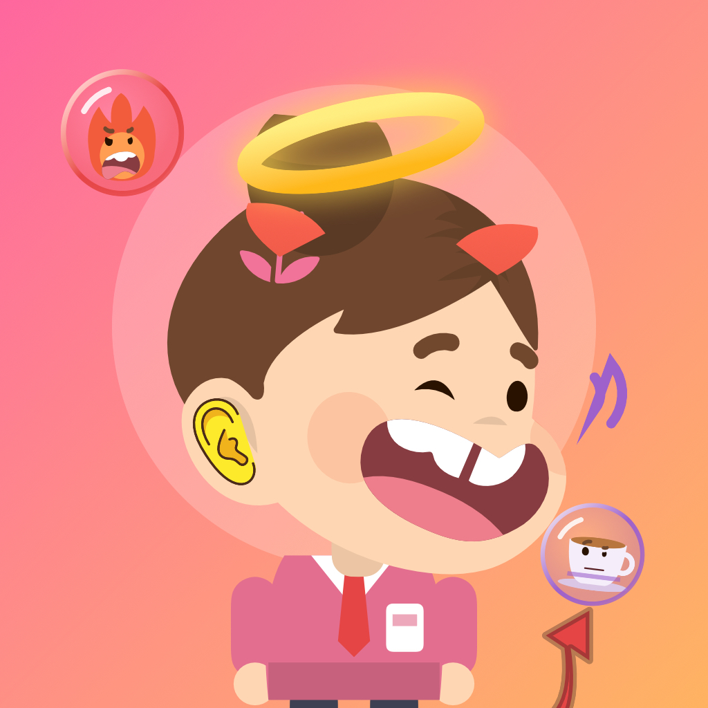

Clock Out Angel
Your workday, as a little demon that lives on your iPhone Lock Screen.
Clock in and a tiny office demon hatches. Every time work gets to you, wake your phone and pop a bubble right on the Lock Screen, without unlocking: rage, slacking, sighs, gossip and eye-rolls each feed it in a different way. At clock-out the demon bursts, and an angel pops out to a party.
- Lives in a Live Activity on the Lock Screen and in the Dynamic Island
- 15 demons to catch by mixing moods, plus rare, holiday and monthly ones
- Days off: send your angel on vacation and collect postcards
- Hairstyles, outfits and themes, all earned by playing
- Free 1-day trial, then a single one-time purchase. No subscription, no ads.
For iPhone, iOS 17 or later. 14 languages.
牛马日记
把你的一天班，变成锁屏上的一只小恶魔。上班打卡孵出小恶魔，被工作气到就在锁屏上戳一个泡泡，不用解锁；下班那一刻，它炸成天使开派对。免费试玩 1 天，之后一次买断，没有订阅，没有广告。